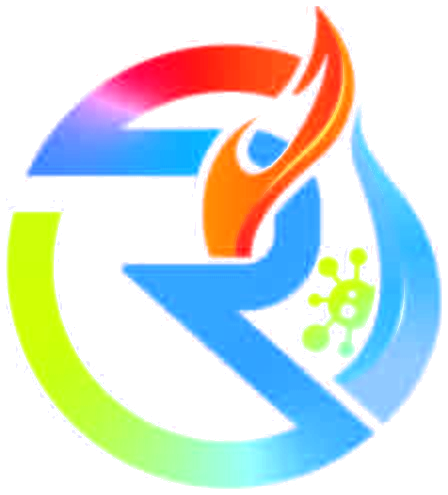
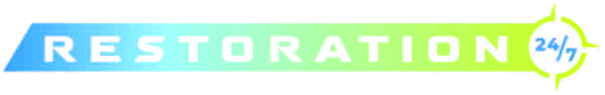

Ordenador


Call 24/7 · 239-287-4908Owner-operated restoration in Cape Coral and Southwest Florida. Licensed mold remediator, 15+ years, day or night.
Móvil
Owner-operated restoration in Cape Coral. Licensed, 15+ years, day or night.